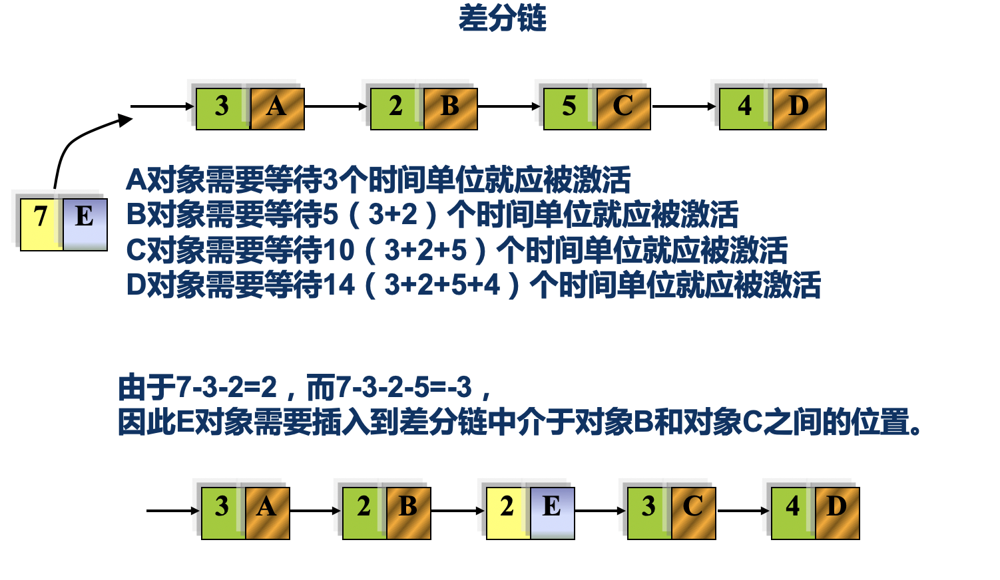
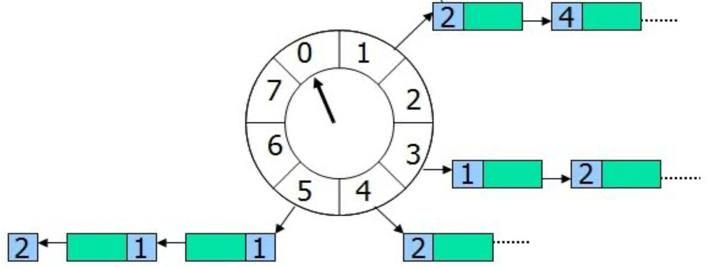
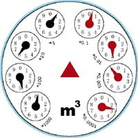

时间轮算法是定时器系统衍生出来的一种调度方案，非常巧妙，令人印象深刻。本文就是在实现多层时间轮算法的过程中，突然想到了之前学习嵌入式系统中提到的时间差分链，回头重新看了一下，它们之间确实有所关联。
在进入时间轮和差分链之前，先梳理一下它们共同的源头，设备时钟系统。
设备时钟系统
一个系统同一时刻可以执行的任务数量必然是有限的，因此就需要安排任务执行的先后次序，而这个次序，就是调度，这个先后，就是时间。因此时间调度就是系统的基础。但计算机设备是如何感知到时间呢，这就是由设备时钟系统的工作。
设备时钟系统首先分为两个部分，硬件时钟和系统时钟。
- 硬件时钟：计算机硬件设备按照一个固定的频率产生一个时钟脉冲
- 系统时钟：系统启动后，以硬件时钟为基准开始计时，产生标准的系统时间
但我们其实应该知道，物理设备由于现实物理条件，总会产生损耗，这就导致物理设备产生的硬件时钟，不可避免的会产生偏差，因此，更多时候，系统时钟是通过网络获取统一的网络时钟为基础。当然这不是今天的重点，但这在我们认识时钟系统时需要注意的问题。
有了标准的时间度量后，系统就可以根据标准的时间度量就任务进行规划，因此产生了各种的调度策略。
但这里需要进行一点区分，上面这部分所说的任务调度，实际上是指CPU的任务调度策略，也就是我们初学操作系统时所认识到的那几种进程调度方案，如先来先服务、短进程优先、高响比、时间片轮转等。这里的任务调度是核心中的核心，其目的是资源竞争的调度方案。而我们今天要说的时间轮和差分链，其调度为定时响应，即目标任务并不是立即执行的，而是有一个间隔，过了时间间隔后再执行任务。
这两种调度之间的关系，简单举例，我们有一个需要3s后再执行的任务，首先需要通过定时响应调度方案先加入定时系统，3s后响应，将该任务从定时系统中取出，放入执行队列中，参与任务调度竞争CPU或其他资源，即先定时响应调度，后资源竞争调度。
定时响应
是的，时间轮和差分链表都属于定时响应的范畴，抛开通用计算机系统和嵌入式系统的区别，他们二者的目的都是一样的，都是用来存放需要延时处理的对象或事件，即定时器。
一个延时任务就是一个定时器，当有多个定时器待执行时，我们需要按照其延时时间依次执行，这就是定时响应调度算法所做的事。
在定时器调度模型中，通常有3种实现方式：
链表
定时器管理程序维护一个链表，当有新的定时器加入时添加到末尾，每次tick更新，需要维护链表上的所有定时器的定时值，当定时值为0则取出执行。

差分链表则属于链表法的一种变形，实际上是一种排序链表，其也只需维护一个链表，只不过在添加新的定时器时，依序查看链表种定时器的等待时间，每经过一个定时器，自身定时时间减少经过的那个定时器的时间，当经过某个定时器，自身的定时时间小于0时，则插入到该定时器前面。其后每次tick更新时，只需更新链首的定时时间，当为0时调用执行。
树
树结构定时器通常应用为最小堆，最小堆将定时器按照最小堆的结构保存，堆定是最小的定时器，每次添加新的定时器，通常根据堆更新的时间复杂度，可以在O(lgn)内完成更新，每次tick是检查堆顶，等待执行。
时间轮

时间轮非常直观，如图所示，时间轮管理器维护一个表盘，表盘有多个插槽，每隔插槽有一个定时器列表，当指针指到某个插槽时，则执行其中的定时器，当添加新的定时器时，只需要简单求余运算，即可知道需要插入的插槽，每次tick只需移动指针即可。
但如果只维护一个简单的时间轮，那么可添加的定时器的定时时间不能超过（该时间轮的插槽数*tick）时间，因此就有今天的主题，引发这一系列思考的多层时间轮算法，水表法。

如图所示，水表上有多个小的轮子，其轮子之间呈递进关系，当规格小的轮子绕完一圈时，较高一级的轮子才前进一格，多层时间轮同理，每个时间轮的每个插槽都维护一个定时列表，当小轮子转完一圈后，较大一层的轮子前进一格，并将其列表上的定时器更新到下层的时间轮，依次执行。
判断一个定时器系统好坏，主要从两方面进行考虑，新增定时器和定时器响应的时间复杂度，虽然有些地方也将删除定时器作为考察指标，但其实删除定时器的使用频率非常小，故不选择加入考察。以上几种方案的各项时间复杂度如下所示：
| 方案 | 新增定时器 | 定时器响应 |
|---|---|---|
| 差分链 | O(n) | O(1) |
| 最小堆 | O(lgn) | O(1) |
| 时间轮 | O(1) | O(1) |
时间轮优化
到了这里，终于到了我为何要写今天这篇文章的起因了。我在实现水表法的过程，发觉其实水表法时间轮的新增定时器的时间复杂度并不是O(1)，应该是O(m)，这个m是时间轮的个数。
上面我们也说了，为什么会发展出多层时间轮，主要就是为了解决单个时间轮不能调度超过一圈时间的定时器，即不能添加任意时间的定时器。虽然严格点说，多层定时器，也有一个最大的时间界限，只不过这个界限随着轮子数的扩充，指数级增长，约等于任意时间了。但轮子数的增加，也带来了一个新的问题，就是时间轮之间的维护。
多层时间轮新增定时器的时间复杂度为O(m)，定时器响应的时间复杂度为O(1)。但我在实现过程中却发现，多层时间轮管理器的维护开销不容小觑。但我们往往衡量一个定时器系统是并不太关注其内部运行维护的开销。
以一个5层10插槽的时间轮为例，现在各层的指针指向的插槽值为[9,9,9,9,2]，
- 现在来了一个新的tick，第1层指向了0，需要更新当前时间轮的插槽的定时器列表，则需要向上请求
- 第2层收到请求，指针+1，发现归0，向第3层请求，
- 第3层收到请求，指针+1，发现归0，向第4层请求
- 第4层收到请求，指针+1，发现归0，向第5层请求
- 第5层收到请求，指针+1，指向3，取出3中的定时器列表，下发到第4层
- 第4层收到定时器列表，遍历依次插入对应的插槽，取出0中的定时器，下发到第3层
- 第3层收到定时器列表，遍历依次插入对应的插槽，取出0中的定时器，下发到第2层
- 第2层收到定时器列表，遍历依次插入对应的插槽，取出0中的定时器，下发到第1层
- 第1层收到定时器列表，遍历依次插入对应的插槽，取出0中的定时器，执行
这里可以看出，这种向上访问，再下放的方式，其维护开销的时间复杂度为O($log_{10}^{n}$)。因此，从一个定时器添加到多层时间轮管理到执行，总的时间复杂度为O(m+$log_{10}^n$)。
这个时候，我想到了单层时间轮和差分链，那么分别看看单层时间轮和差分链的几项指标
- 新增定时器
- 单层时间轮：O(1)，一次取余操作插入对应的插槽，但不能添加任意时间的定时器
- 差分链：O(n)，依次遍历链上对象，找到合适的位置插入，但可以添加任意时间的定时器
- 运行时维护
- 单层时间轮：时间轮指针移动，不用操作定时器
- 差分链：链首对象定时值减1
- 定时器响应
- 单层时间轮：取出指向插槽的定时器，执行
- 差分链：取出链首定时器，执行
我就想，把单层定时器和差分链嫁接一下，就有了我的“改进”版单层时间轮。
我的时间轮方案中，时间轮管理器内部维护一个动态数组，和一个单层时间轮。每次新增定时器时，先判断其是否会在本轮剩余时间内启动，如果会启动，则加入相应的插槽；如果不会启动，则插入动态数组中，这里通过二分查找法，可以达到O(lgn)的复杂度，总的来说，该方案新增定时器的时间复杂度为O(lgn)。
而后只需在每次时间轮转完一圈后，启动一次时间轮更新操作就可以完成更新，即依次遍历动态数组，取出小于一本轮终点tick的定时器，插入时间轮插槽，这里的动态数组由于先前插入时经过二分查找法，是一个顺序数组，因此不会有额外的操作，但询问到一个不合规的定时器，即可跳出循环。因此，这里的运行维护，可以认为是O(1)。
最后的执行阶段，则同单层定时器一样，按指针选择执行即可，复杂度为O(1)。
因此，本文提出的改进方案的三项复杂度分别为，新增定时器O(lgn)、运行时维护O(1)、定时器响应O(1)。与多层定时器O(m+lgn)相比，本文方案复杂度为O(lgn)，好想更好一点，而且本文方案是真正支持任意时间的定时器，虽然这个功能并不算什么。
结
其实后来自己想了想，这样动态数组+单层定时器的组合方式初看似乎是比多层时间轮更好，但这里其实忽略了动态数组的维护损耗，但动态数组的维护损耗又很难量化。当数量达到一定量级的定时器任务时，孰优孰劣就很难说了。
暂时就到这里了，网络上林林总总也没看到有人这方面的比较，就记录一下，至少这个网课没白上。😊